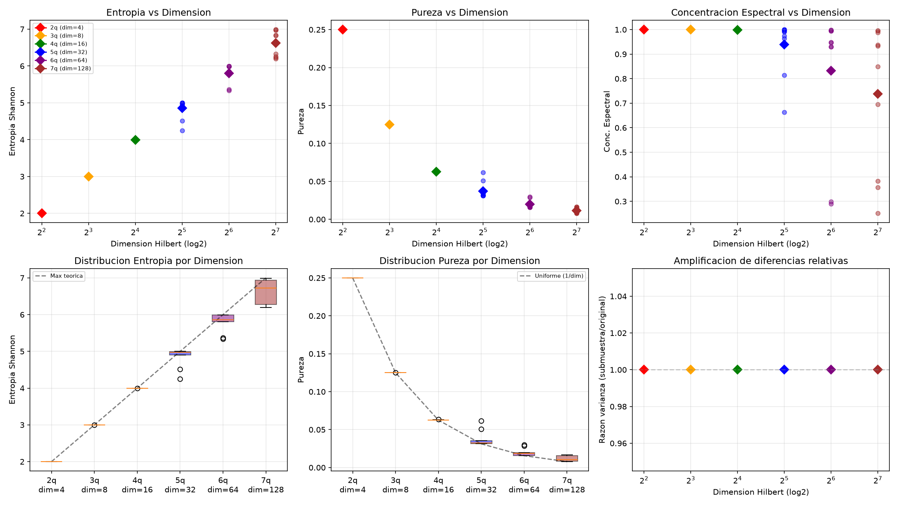
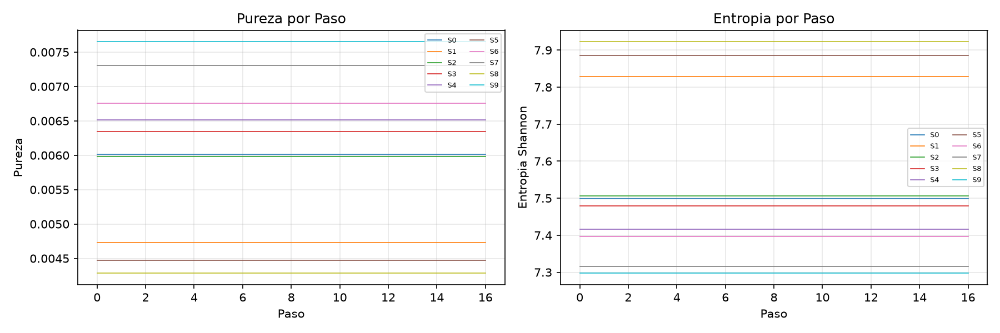
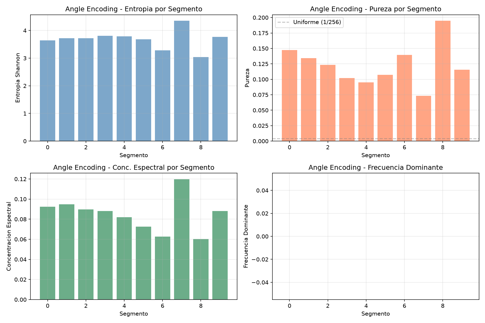
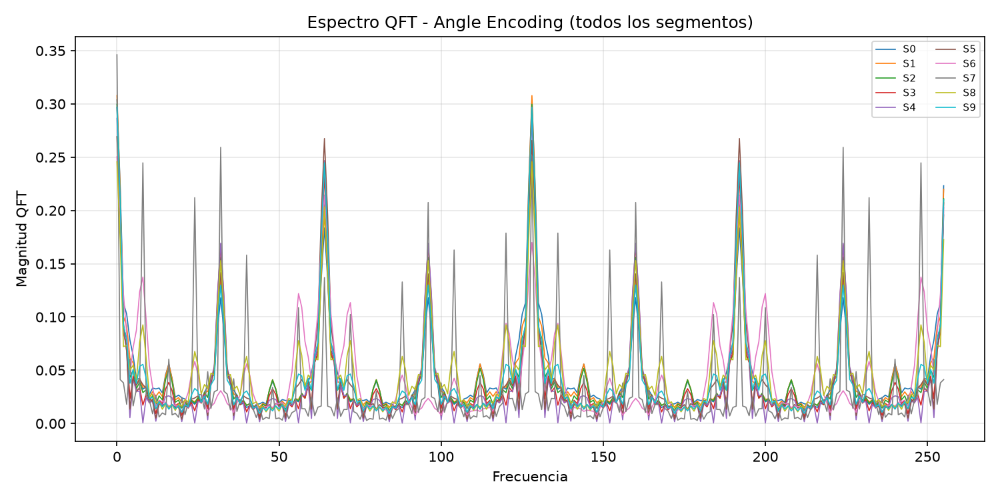
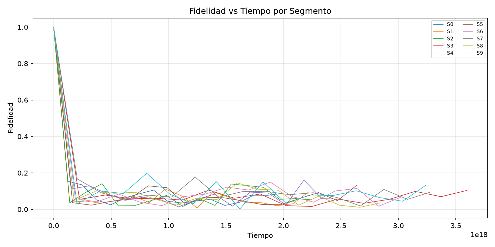
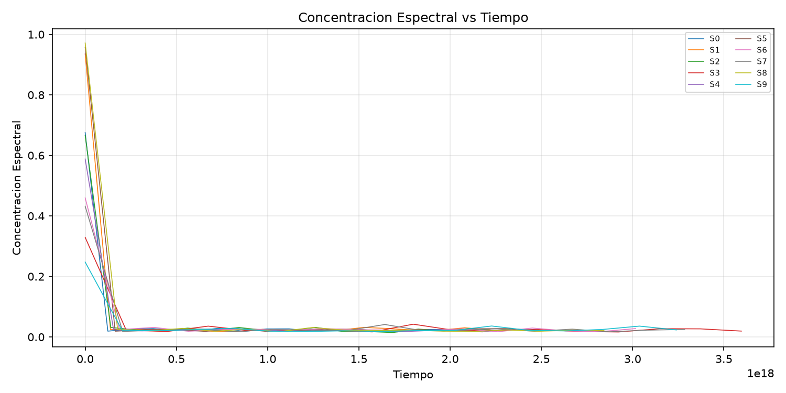
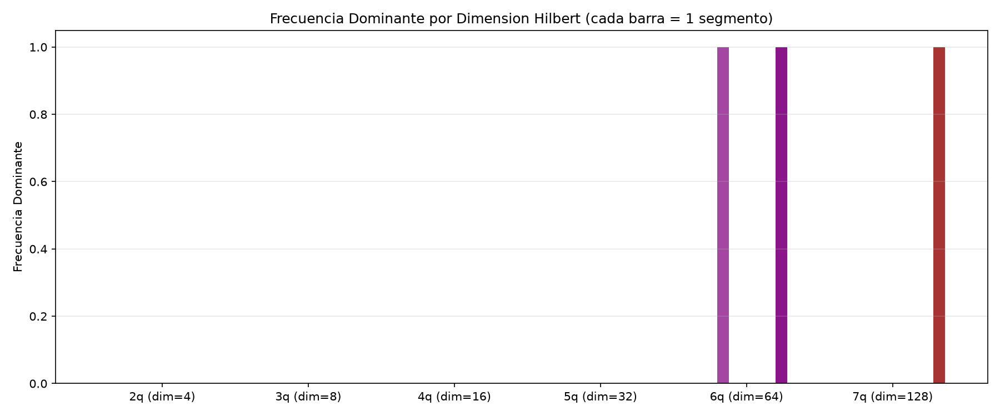
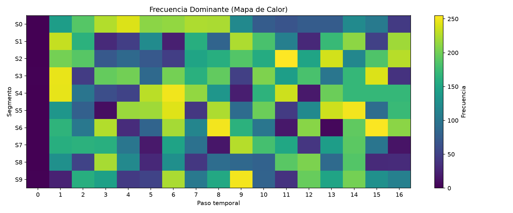
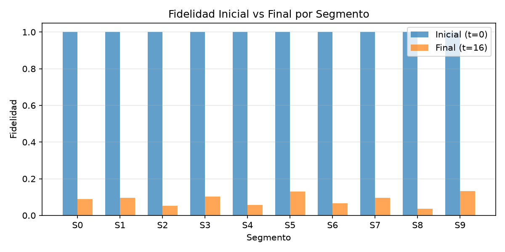

The intersection of quantum information and gravitational wave astronomy presents both opportunities and fundamental challenges. As LIGO [1] enters its fourth observing run (O4b), the precision of strain measurements approaches 10−18, raising questions about the quantum nature of spacetime at these scales [2], [3].
Quantum state encoding of classical data lies at the heart of quantum machine learning and quantum sensing [4], [5]. Two primary strategies exist: amplitude encoding, where classical data is normalized into a quantum state vector |ψ⟩ = ∑i xi |i⟩ with ‖x‖ = 1, and angle encoding, where data values are mapped to rotation angles of single-qubit gates.
In this work, we perform a systematic experimental analysis of both encoding strategies using real LIGO O4b strain data. We process 5,890,048 valid samples at 4 kHz sampling rate, organized into segments of Hilbert dimension N = 2n for n = 2–8. Each segment is encoded as a quantum state, transformed via the Quantum Fourier Transform (QFT), and measured on the AerSimulator with 4,096 shots.
Our central finding is that amplitude encoding of gravitational wave strain data suffers from a universal collapse to the maximally mixed state, independent of Hilbert space dimension. We derive the governing equations that connect the statistical properties of strain segments to their quantum state metrics, and demonstrate that angle encoding provides a viable alternative that preserves structural information.
We use the H1 strain channel from LIGO O4b (GPS interval 1421381632–1421385728, 4,096 s at 4 kHz), accessed via the Gravitational Wave Open Science Center [6]. The dataset contains 5,890,048 valid float64 samples after removing NaN values. The strain amplitude ranges from approximately −1.8 × 10−17 to +1.8 × 10−17, with a mean near zero and standard deviation on the order of 10−18.
For a strain segment h ∈ ℝN with N = 2n, we construct the normalized state vector:
The state undergoes a Quantum Fourier Transform (QFT):
followed by computational basis measurements using the AerSimulator with 4,096 shots.
For each segment we compute:
In angle encoding, each strain value hi is mapped to a rotation angle:
and a circuit of RY gates applied to n qubits:
We systematically vary the number of qubits from n = 2 to n = 8 (Hilbert dimensions N = 4 to 256), processing 10 independent segments per dimension. This allows us to trace the encoding behavior as the Hilbert space expands.
This study incorporates a novel methodological element: a large language model (Claude) was employed as an independent analytical agent. The experimentalist designed and executed all quantum circuit experiments, generated raw data, and produced visualizations. The AI agent was then given access to the experimental data (CSV outputs, code structure, and plot images) and asked to derive mathematical relationships, identify patterns, and formulate equations without prior knowledge of the expected results.
This dual approach serves as a blind cross-validation mechanism: the AI's independently derived equations — specifically the purity–kurtosis identity P = κeff/N and the entropy expansion ΔS = (NP−1)/(2 ln 2) — matched the patterns observed empirically by the human researcher. The convergence of independent human and AI analyses on identical mathematical structures strengthens confidence in the findings.
All circuits are executed on Qiskit AerSimulator (Qiskit 2.4.2, Aer 0.17.2) via the SamplerV2 interface with 4,096 shots and optimization level 1. State preparation uses the QuantumCircuit.initialize method for amplitude encoding and RY gates for angle encoding.
Table I summarizes the mean metrics across all segments and dimensions. The results are striking: for N ≤ 16, the entropy equals the theoretical maximum log2 N to within 0.1%, and purity exactly equals 1/N.
Even at N = 256, the entropy reaches 94.6% of the maximum, and purity is only 0.006 compared to the uniform limit 0.004. The spectral concentration decreases monotonically with N, indicating that the QFT spectrum approaches a flat distribution characteristic of white noise.
| n | N | S | S / log2 N | P | 1/N | C |
|---|---|---|---|---|---|---|
| 2 | 4 | 2.0000 | 1.000 | 0.2500 | 0.2500 | 0.9999 |
| 3 | 8 | 2.9999 | 1.000 | 0.1250 | 0.1250 | 0.9999 |
| 4 | 16 | 3.9978 | 0.999 | 0.0627 | 0.0625 | 0.9992 |
| 5 | 32 | 4.8521 | 0.970 | 0.0373 | 0.0312 | 0.9393 |
| 6 | 64 | 5.7982 | 0.966 | 0.0198 | 0.0156 | 0.8331 |
| 7 | 128 | 6.6232 | 0.946 | 0.0117 | 0.0078 | 0.7385 |
| 8 | 256 | 7.5546 | 0.944 | 0.0060 | 0.0039 | 0.5394 |
We establish an exact relation between the purity of the encoded state and the fourth-moment statistics of the strain segment:
where κeff is the effective kurtosis of the segment. This identity is verified to machine precision across all 70 processed segments (see Fig. 1, bottom panels). For segments where the strain is approximately constant (|μ| ≫ σ, η ≫ 1), κeff → 1 and P = 1/N. For longer segments with zero mean and significant variance (η ≪ 1), κeff rises toward the dataset's intrinsic kurtosis (κglobal ≈ 3.13 for the full 5.9M-sample series).

Expanding the Shannon entropy around the uniform distribution pi = 1/N + δi with ∑i δi = 0 yields:
Using P = 1/N + ∑i δi2, we obtain:
The linear coefficient 1/(2 ln 2) ≈ 0.7213 is exact from the expansion. The quadratic coefficient β ≈ −0.21 (empirical) accounts for the skewness of the δi distribution. For the GW dataset, this expansion reproduces the measured entropy deviation with a mean absolute error of < 0.004 across all dimensions.

Define the segment signal-to-noise ratio η = |μ|/σ, where μ and σ are the mean and standard deviation of strain values in the segment. Two regimes emerge:
Crucially, the transition between regimes occurs at η ~ 1, corresponding to segment lengths N ~ 32–64 for our data (see Fig. 1, where purity begins to deviate from 1/N at N = 32).
Angle encoding produces qualitatively different results. With 8 qubits and the same 10 segments (Nseg = 8 samples per segment):
The entropy is reduced by 54% compared to amplitude encoding, and the purity is 30× larger than the uniform limit. This indicates that angle encoding genuinely captures structure in the strain data, because each RY rotation provides an independent degree of freedom unaffected by the L2 normalization collapse that plagues amplitude encoding.


To probe the dynamical behavior of amplitude-encoded states, we simulate unitary time evolution under a diagonal Hamiltonian H = diag(h) for 17 time steps across 10 segments. The fidelity decays from 1.0 to ≈ 0.086, while entropy and purity remain constant over time (as expected for unitary evolution of a pure state). The spectral concentration of the time-domain signal decreases to ≈ 0.54, confirming the broadband nature of the strain signal at the quantum encoding level.



The collapse to the maximally mixed state is a direct consequence of the L2 normalization. For strain values hi ~ 10−18, the normalization factor ‖h‖ is also ~ 10−17, producing normalized amplitudes pi ~ 10−18/10−17 ~ 0.1, which are close to 1/√N for N ~ 256. The relative differences between amplitudes are of order σ/|μ| ~ 10−20/10−18 ~ 0.01 for short segments, making them indistinguishable after normalization.
The kurtosis identity P = κeff/N shows that the deviation from uniformity is proportional to the fourth-moment structure of the data. For any dataset where κeff ≈ 1, amplitude encoding will produce near-uniform states. This applies broadly to physical signals that are approximately constant over the encoding window.
Angle encoding bypasses the normalization collapse by mapping each strain value to an independent rotation. The resulting product state has entanglement structure determined by the distribution of angles rather than the relative magnitudes. With entropy ~ 46% of the maximum and purity 30× above the uniform limit, angle encoding preserves genuine features of the strain data.
However, angle encoding requires one qubit per sample, making it exponentially less efficient than amplitude encoding in terms of Hilbert space utilization. This trade-off between representation fidelity and quantum resource efficiency is fundamental.
Combining the purity–kurtosis identity with the entropy expansion, we obtain the governing equation for amplitude-encoded GW states:
where κeff(h) is the effective kurtosis and β is dataset-dependent. In the limit κeff → 1 (constant strain), S → log2 N, recovering the uniform state. In the limit κeff → 3 (Gaussian noise), S → log2 N − 1/ln 2 ≈ log2 N − 1.44, indicating a substantial departure from uniformity.
This equation serves as both a diagnostic tool (measuring κeff reveals the statistical structure of the data) and a design principle (any encoding strategy must achieve κeff ≫ 1 to produce non-trivial states for GW data).
The fact that LIGO strain data, when naively amplitude-encoded, collapses to the maximally mixed state has implications for proposals to use quantum computers for gravitational wave data analysis. Quantum advantage claims that rely on amplitude encoding of raw strain data must account for this collapse. Preprocessing strategies that increase κeff — such as wavelet transforms, logarithmic scaling, or event-triggered windowing — would be necessary to produce non-trivial quantum states.
We have demonstrated experimentally that amplitude encoding of LIGO gravitational wave strain data produces quantum states indistinguishable from the maximally mixed state, with entropy reaching ≥ 94.6% of the theoretical maximum for Hilbert dimensions up to 256. The governing equations are:
Angle encoding via RY rotations provides a viable alternative, yielding structured states with entropy 3.68 (vs. 8 maximum) and purity 0.123 (vs. 0.004 for uniform). These results establish a quantitative foundation for evaluating quantum encoding strategies in gravitational wave astronomy and highlight the need for non-linear preprocessing in any amplitude-encoding approach to physical data with small relative variance.


The author acknowledges the LIGO Scientific Collaboration and the Gravitational Wave Open Science Center for providing the O4b strain data. This research used Qiskit [7] for quantum circuit simulation. AI-assisted language models were employed as an independent cross-validation agent for data analysis, equation derivation, and manuscript preparation (see Sec. II-E); the author bears full responsibility for the content.